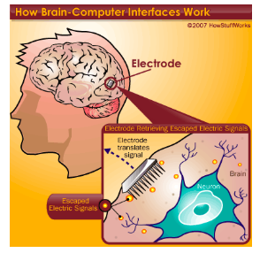

Breakthroughs

HowStuffWorks. (2007). Retrieved from https://computer.howstuffworks.com/brain-computer-interface1.htm
Information transfer rate (ITR): The information transfer rate is the accuracy of each signal recorded by an electrode (Abdulkader et al., 2015). Even small mistakes can crucially affect a whole network (Abdulkader et al., 2015). There needs to be some many of successfully reducing the error to a negligible quantity.
Usability: The current technology requires a copious amount of training from subjects in order to be used (Abdulkader et al., 2015).
Interpretation of signals: Since the properties and functions of the brain are not fully understood, many of the signals emitted by the brain may not be understood by a BCI and the millions of signals occur simultaneously, making them hard to interpret (Abdulkader et al., 2015). Furthermore, there is a limited amount of electrodes (which is in the hundreds) and it cannot record the billions of signals occurring at once (Corbyn, 2019).
Corrosion of electrodes: Electrodes will damage over time due to the scarring of tissue caused by the implant in the area (Corbyn, 2019).
Outside factors: Factors such as the emotional state and fatigue of a subject can disrupt the signals sent to a BCI (Abdulkader et al., 2015). Even eye movements can cause interference with the signals recorded by electrodes (Abdulkader et al., 2015).